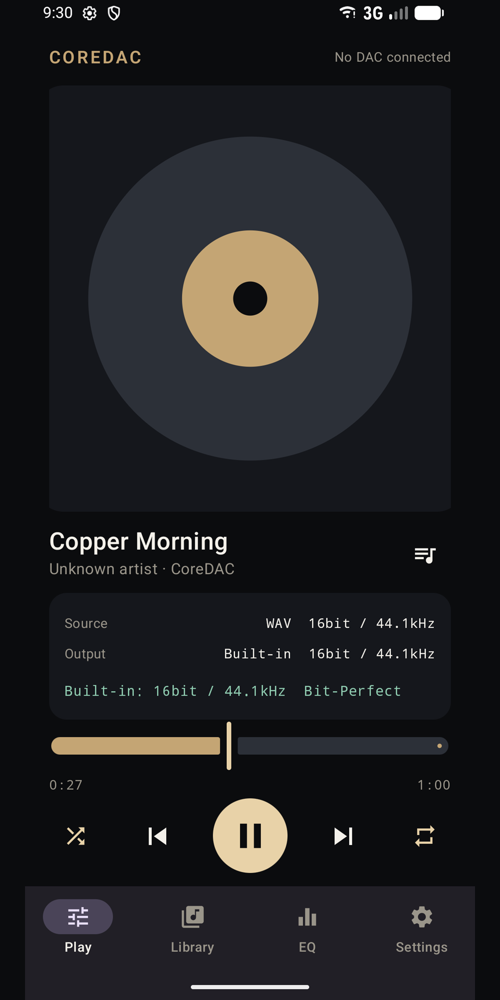
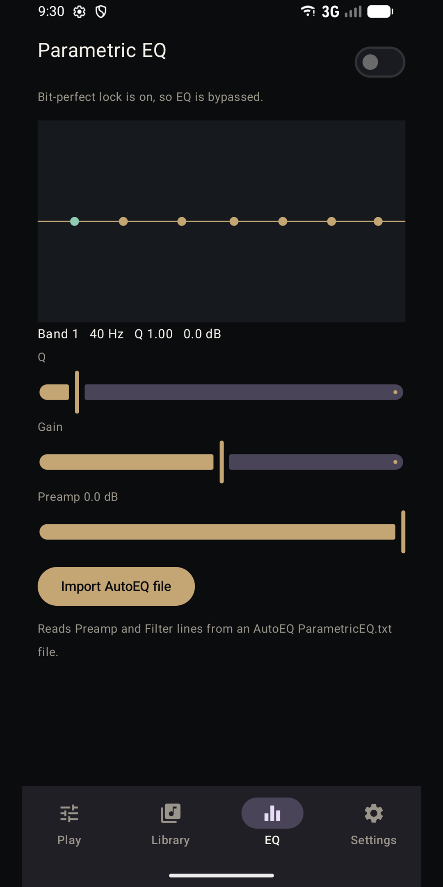
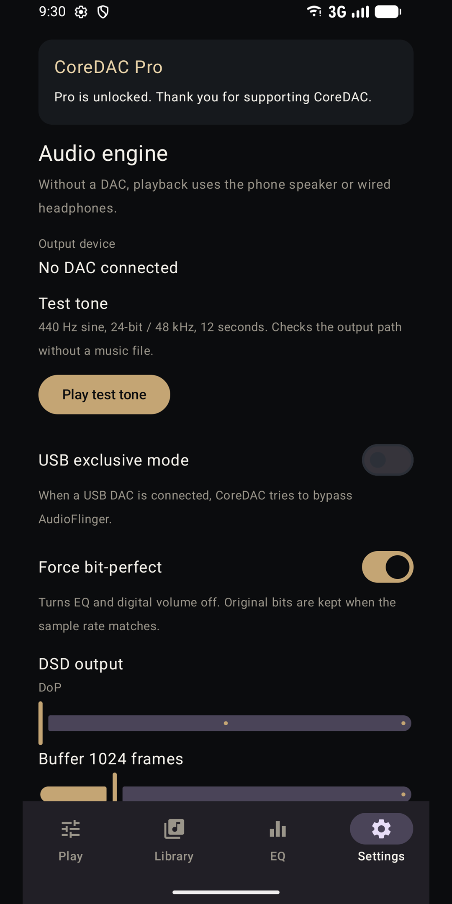

Apps / CoreDAC Audio
Hi-res player for AndroidCoreDAC Audio
Play hi-res audio on the phone or a USB DAC, and see the real output specs. Playback is free. There are no ads and no subscription. Now on Google Play.
Get it on Google PlayScreenshots



The app
CoreDAC Audio plays FLAC, WAV, AIFF, and DSD, plus ALAC, MP3, AAC, and OGG through the device decoder. With no DAC connected, it uses the phone speaker or wired headphones.
Output specs
The player shows the source next to the actual output. It says Bit-Perfect when the sample rate and bit depth match and EQ and digital volume are off. Otherwise it says DSP or Resampled.
Playback
Pick any track from the queue. Shuffle and repeat cover all or one. Control playback from the notification, the lock screen, or headset buttons. Playback pauses for a phone call and resumes when the call ends.
USB DAC
Choose the system USB output or USB exclusive mode. Exclusive mode tries to send samples directly to a USB Audio Class device. If the phone blocks that path, playback continues on the default output. A test tone checks the path without a music file.
CoreDAC Pro
A one-time purchase unlocks USB exclusive mode, parametric EQ with AutoEQ import, and network libraries. EQ sets frequency, Q, and gain. Network libraries use SMB, WebDAV, and DLNA. A folder is listed on the phone, then a track is downloaded and played.
Formats
DSD playback is included. MQA unfolding is not included. Files with an MQA marker are labeled only.
On the phone
There is no account and no ads. Network passwords stay on the device and are sent only to the storage you enter. Listening history is not uploaded.
Free on Google Play, with a one-time in-app purchase. No ads. Rated Everyone. Google Play · Privacy policy